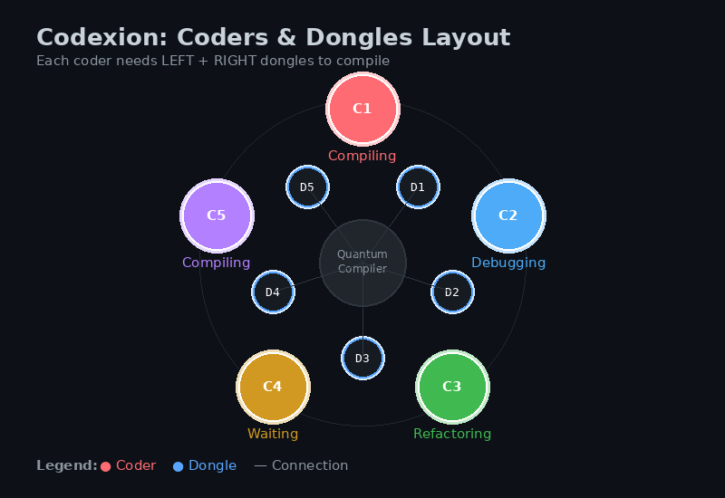
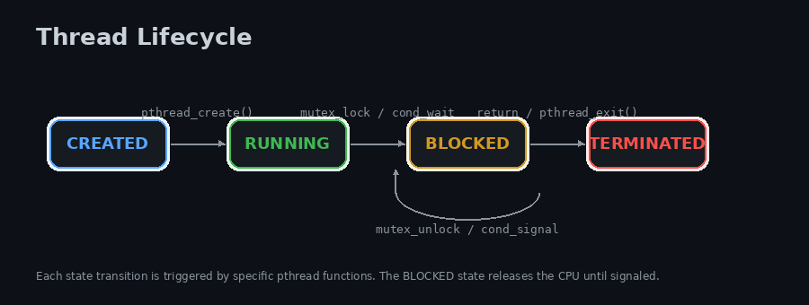
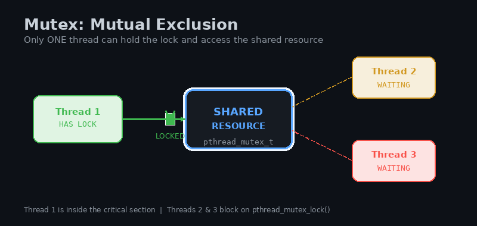
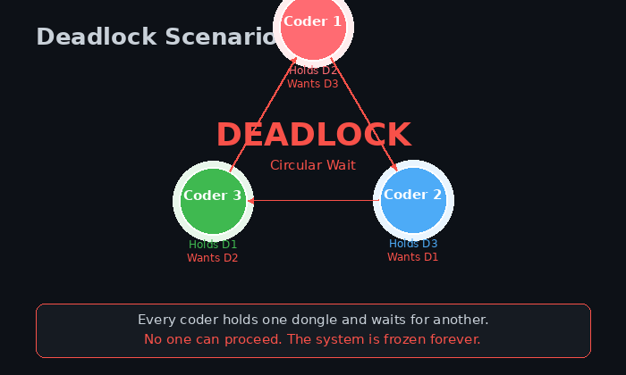
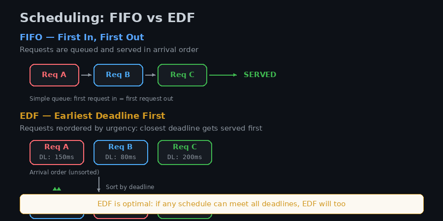
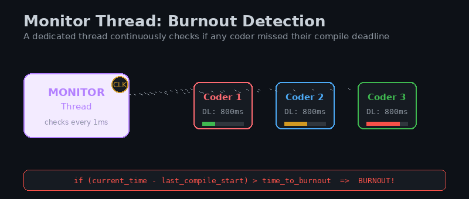
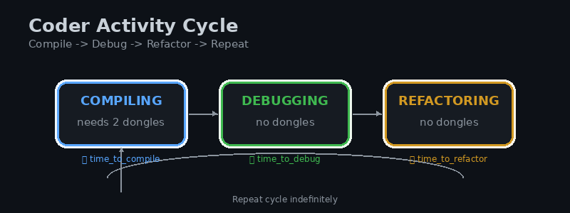

Codexion Learning Guide
Master POSIX threads, mutexes, condition variables, and real-time scheduling by building a concurrent resource simulator
Introduction
Codexion is a concurrency challenge that models a real-world resource contention problem. Multiple coders (threads) sit around a shared Quantum Compiler and compete for USB dongles (mutex-protected resources) to compile their code. The simulation must prevent burnout (deadline misses) while fairly arbitrating access to limited resources.
This guide will teach you every concept you need to build Codexion from scratch:
- POSIX Threads — Creating and managing concurrent execution flows
- Mutexes — Protecting shared resources from race conditions
- Condition Variables — Efficient waiting and signaling between threads
- The Dining Philosophers Problem — Classic synchronization puzzle
- Real-Time Scheduling — FIFO and Earliest Deadline First (EDF)
- Priority Queues — Heap-based scheduling implementation
- Time Management — Precise timing with
gettimeofday

Figure 1: Coders arranged in a circle around the Quantum Compiler, each needing two adjacent dongles to compile.
Concurrency is everywhere: operating systems, databases, web servers, game engines. Understanding threads, locks, and scheduling is essential for any systems programmer. Codexion distills these concepts into a tangible, visual problem.
The Problem Statement
Ncoders sit in a circle around a Quantum Compiler- There are
NUSB dongles on the table — one between each pair of adjacent coders - Each coder needs both their left and right dongle to compile
- After compiling, a coder debugs, then refactors, then compiles again
- Each coder has a burnout deadline: if they don't compile within
time_to_burnoutms of their last compile, they burn out - Dongles have a cooldown: after being released, they cannot be taken again for
dongle_cooldownms - Scheduling can be
fifo(arrival order) oredf(earliest deadline first) - A monitor thread detects burnout and stops the simulation
Setup & Compilation
Since Codexion uses POSIX threads, you need to link against the pthread library:
cc -Wall -Wextra -Werror -pthread codexion.c -o codexionThe -pthread flag tells the compiler to link the POSIX thread library and set up thread-safe compilation. On macOS, you may need -lpthread instead.
Required Headers
#include <pthread.h> /* Threads, mutexes, condition variables */
#include <sys/time.h> /* gettimeofday */
#include <unistd.h> /* usleep */
#include <stdio.h> /* printf */
#include <stdlib.h> /* malloc, free, atoi */
#include <string.h> /* memset */The project requires C89, which means: declare all variables at the top of a block, no // comments (use /* */), no mixed declarations and code, and no variable-length arrays.
1POSIX Threads
A thread is an independent execution flow within a process. While a process has its own memory space, threads within the same process share that memory. This makes threads lightweight but requires synchronization to prevent conflicts.

Figure 2: The lifecycle of a POSIX thread from creation to termination.
Creating a Thread
#include <pthread.h>
void *thread_function(void *arg)
{
int id = *(int *)arg;
printf("Thread %d is running\n", id);
return (void *)0;
}
int main(void)
{
pthread_t thread;
int id = 1;
/* Create a new thread */
pthread_create(&thread, NULL, thread_function, &id);
/* Wait for the thread to finish */
pthread_join(thread, NULL);
return 0;
}Key Functions
| Function | Purpose |
|---|---|
pthread_create | Creates a new thread. Takes: thread ID pointer, attributes, start function, argument. |
pthread_join | Waits for a thread to finish. Blocks until the target thread terminates. |
pthread_exit | Terminates the calling thread. Other threads continue running. |
pthread_detach | Marks a thread as detached — resources are freed automatically on exit. Cannot be joined. |
Passing Arguments to Threads
Never pass a local variable's address if it might change before the thread reads it. Use dynamically allocated memory or an array:
int main(void)
{
pthread_t threads[5];
int ids[5];
int i;
for (i = 0; i < 5; i++)
{
ids[i] = i + 1;
pthread_create(&threads[i], NULL, thread_function, &ids[i]);
}
for (i = 0; i < 5; i++)
pthread_join(threads[i], NULL);
return 0;
}If you pass &i instead of &ids[i] in the loop above, all threads might read the same value because i changes in the main thread while child threads are still starting up. This is a classic concurrency bug.
2Mutexes
A mutex (mutual exclusion lock) ensures that only one thread can access a critical section at a time. Think of it as a lock on a door: whoever holds the key can enter, everyone else waits outside.

Figure 3: Thread 1 holds the mutex and accesses the shared resource. Threads 2 and 3 wait.
Basic Mutex Operations
pthread_mutex_t lock;
/* Initialize */
pthread_mutex_init(&lock, NULL);
/* Lock (blocks if already locked) */
pthread_mutex_lock(&lock);
/* Critical section — only one thread here at a time */
shared_counter++;
/* Unlock */
pthread_mutex_unlock(&lock);
/* Destroy when done */
pthread_mutex_destroy(&lock);Why Mutexes Matter: The Lost Update
Without a mutex, two threads incrementing the same variable can lose updates:
/* Thread A reads counter = 5 */
/* Thread B reads counter = 5 (before A writes) */
/* Thread A writes counter = 6 */
/* Thread B writes counter = 6 (overwrites A's update!) */
/* Expected: 7, Actual: 6 — LOST UPDATE */Try-Lock (Non-Blocking)
pthread_mutex_trylock attempts to acquire the lock without blocking. It returns 0 on success, EBUSY if already locked:
if (pthread_mutex_trylock(&lock) == 0)
{
/* Got the lock */
pthread_mutex_unlock(&lock);
}
else
{
/* Lock was busy, do something else */
}Mutex Attributes (Error Checking)
pthread_mutexattr_t attr;
pthread_mutexattr_init(&attr);
pthread_mutexattr_settype(&attr, PTHREAD_MUTEX_ERRORCHECK);
pthread_mutex_init(&lock, &attr);
pthread_mutexattr_destroy(&attr);- Always pair
lockwithunlock— use the same thread for both - Keep critical sections as short as possible
- Lock order matters: always acquire locks in the same order to prevent deadlock
- Initialize before use, destroy after all threads are done
3Condition Variables
A condition variable allows threads to wait for a condition to become true without consuming CPU. Unlike a mutex which only provides mutual exclusion, a condition variable provides synchronization — threads can sleep until signaled to wake up.
Why Not Just Spin?
/* BAD: Spin-waiting wastes 100% CPU */
while (!ready)
; /* CPU burns waiting */
/* GOOD: Condition variable puts thread to sleep */
pthread_mutex_lock(&lock);
while (!ready)
pthread_cond_wait(&cond, &lock); /* Thread sleeps, releases lock */
pthread_mutex_unlock(&lock);The Three Condition Variable Operations
| Function | Purpose |
|---|---|
pthread_cond_wait | Atomically release mutex and block until signaled. Re-acquires mutex before returning. |
pthread_cond_signal | Wake up one waiting thread. |
pthread_cond_broadcast | Wake up all waiting threads. |
pthread_cond_timedwait | Wait with a timeout. Returns ETIMEDOUT if deadline passes. |
Producer-Consumer Example
This classic pattern shows how condition variables coordinate work between threads:
pthread_mutex_t lock = PTHREAD_MUTEX_INITIALIZER;
pthread_cond_t cond = PTHREAD_COND_INITIALIZER;
int data_ready = 0;
void *consumer(void *arg)
{
(void)arg;
pthread_mutex_lock(&lock);
while (!data_ready)
{
/* Atomically: unlock mutex + sleep on cond + relock on wakeup */
pthread_cond_wait(&cond, &lock);
}
/* Now we hold the lock and data_ready is true */
printf("Consumer: got data!\n");
data_ready = 0;
pthread_mutex_unlock(&lock);
return NULL;
}
void *producer(void *arg)
{
(void)arg;
sleep(1); /* Simulate work */
pthread_mutex_lock(&lock);
data_ready = 1;
pthread_cond_signal(&cond); /* Wake up consumer */
pthread_mutex_unlock(&lock);
return NULL;
}Why while and Not if?
Always use while with pthread_cond_wait. This protects against spurious wakeups — rare events where a thread wakes up without being signaled. The while loop re-checks the condition:
/* WRONG: If spurious wakeup happens, condition may still be false */
if (!ready)
pthread_cond_wait(&cond, &lock);
/* CORRECT: Re-check condition after every wakeup */
while (!ready)
pthread_cond_wait(&cond, &lock);Timed Wait
pthread_cond_timedwait is essential for Codexion's burnout detection. It waits but returns ETIMEDOUT if the deadline passes:
struct timespec deadline;
clock_gettime(CLOCK_REALTIME, &deadline);
deadline.tv_sec += 1; /* Wait up to 1 second */
int rc = pthread_cond_timedwait(&cond, &lock, &deadline);
if (rc == ETIMEDOUT)
printf("Timeout!\n");pthread_cond_wait always requires a locked mutex. It atomically releases the mutex and puts the thread to sleep. When woken, it re-acquires the mutex before returning. This prevents lost wakeups.
4The Dining Philosophers Problem
Codexion is a variation of the Dining Philosophers — a classic concurrency problem where N philosophers sit at a round table with N forks. Each philosopher needs two forks to eat. The challenge: prevent deadlock and starvation.

Figure 4: Deadlock — every coder holds one dongle and waits for another.
The Deadlock Scenario
If every coder picks up their left dongle simultaneously, then tries to pick up their right dongle, everyone waits forever:
/* DANGEROUS: Can cause deadlock */
pthread_mutex_lock(&left_dongle); /* Everyone grabs left */
pthread_mutex_lock(&right_dongle); /* Everyone waits for right -> DEADLOCK */
/* Compile... */
pthread_mutex_unlock(&right_dongle);
pthread_mutex_unlock(&left_dongle);Solution 1: Asymmetric Lock Ordering
Force an ordering: odd-numbered coders pick left first, even-numbered pick right first. This breaks the circular wait condition:
if (coder_id % 2 == 0)
{
pthread_mutex_lock(&right_dongle);
pthread_mutex_lock(&left_dongle);
}
else
{
pthread_mutex_lock(&left_dongle);
pthread_mutex_lock(&right_dongle);
}Solution 2: Try-Lock with Backoff
Pick up the first dongle, then try the second. If unavailable, release the first and retry:
while (1)
{
pthread_mutex_lock(&left_dongle);
if (pthread_mutex_trylock(&right_dongle) == 0)
break; /* Got both! */
pthread_mutex_unlock(&left_dongle); /* Release and retry */
usleep(100); /* Small delay to prevent livelock */
}Solution 3: Condition Variables with Scheduler
This is the Codexion approach. Instead of blindly grabbing dongles, coders request access through a centralized scheduler that grants permission based on FIFO or EDF ordering:
/* Coder requests both dongles from scheduler */
request_dongles(coder_id);
/* Scheduler grants access, coder compiles */
compile();
/* Release dongles back to scheduler */
release_dongles(coder_id);To prevent deadlock, eliminate one of the four Coffman conditions:
- Mutual Exclusion — Dongles are exclusive (required)
- Hold and Wait — Break by releasing held resources if second unavailable
- No Preemption — Break by allowing forced release (not used here)
- Circular Wait — Break by enforcing lock ordering or centralized scheduling
5Time in C
Precise timing is critical for Codexion. You need to measure elapsed time in milliseconds, compute deadlines, and implement cooldowns.
gettimeofday
Returns the current time with microsecond precision:
#include <sys/time.h>
long long get_time_ms(void)
{
struct timeval tv;
gettimeofday(&tv, NULL);
return ((long long)tv.tv_sec * 1000) + (tv.tv_usec / 1000);
}usleep
Suspends the calling thread for a specified number of microseconds:
#include <unistd.h>
usleep(200000); /* Sleep for 200 milliseconds */
usleep(5000); /* Sleep for 5 milliseconds */usleep is not guaranteed to sleep for exactly the requested time. The OS scheduler may delay resumption. For Codexion, use gettimeofday to measure actual elapsed time rather than relying solely on usleep.
Computing Deadlines
long long last_compile_start = get_time_ms();
long long time_to_burnout = 800; /* ms */
/* Check if burned out */
if (get_time_ms() - last_compile_start > time_to_burnout)
printf("BURNOUT!\n");Timed Condition Wait with Absolute Time
struct timespec ms_to_timespec(long long ms)
{
struct timespec ts;
struct timeval tv;
gettimeofday(&tv, NULL);
ts.tv_sec = tv.tv_sec + (ms / 1000);
ts.tv_nsec = (tv.tv_usec * 1000) + ((ms % 1000) * 1000000);
if (ts.tv_nsec >= 1000000000)
{
ts.tv_sec++;
ts.tv_nsec -= 1000000000;
}
return ts;
}6Scheduling: FIFO vs EDF
When multiple coders request the same dongle, the scheduler decides who gets it first. Codexion implements two scheduling policies.

Figure 5: FIFO serves requests in arrival order. EDF reorders by urgency (earliest deadline).
FIFO (First In, First Out)
Requests are queued in arrival order. Simple, fair, but doesn't account for urgency:
/* Simple linked list queue */
typedef struct s_request
{
int coder_id;
struct s_request *next;
} t_request;
typedef struct
{
t_request *head;
t_request *tail;
} t_fifo_queue;
void fifo_enqueue(t_fifo_queue *q, int coder_id)
{
t_request *req = malloc(sizeof(t_request));
req->coder_id = coder_id;
req->next = NULL;
if (q->tail)
q->tail->next = req;
else
q->head = req;
q->tail = req;
}
int fifo_dequeue(t_fifo_queue *q)
{
t_request *req;
int id;
if (!q->head)
return -1;
req = q->head;
id = req->coder_id;
q->head = req->next;
if (!q->head)
q->tail = NULL;
free(req);
return id;
}EDF (Earliest Deadline First)
Each coder has a burnout deadline computed as last_compile_start + time_to_burnout. EDF serves the coder whose deadline is closest:
/* Priority = deadline (lower = higher priority) */
typedef struct s_request
{
int coder_id;
long long deadline; /* burnout deadline in ms */
} t_request;
/* Min-heap: parent has earlier deadline than children */
typedef struct
{
t_request *arr;
int size;
int capacity;
} t_edf_queue;EDF is optimal for uniprocessor scheduling: if any schedule can meet all deadlines, EDF will too. This makes it ideal for Codexion's burnout prevention.
7Priority Queue / Min-Heap in C
C89 has no standard priority queue. You must implement a binary min-heap yourself. A heap is a complete binary tree where each parent is smaller than its children.
Heap Structure
typedef struct s_heap_node
{
int coder_id;
long long deadline; /* priority: lower = higher */
} t_heap_node;
typedef struct
{
t_heap_node *nodes;
int size;
int capacity;
} t_heap;
t_heap *heap_create(int capacity)
{
t_heap *h = malloc(sizeof(t_heap));
h->nodes = malloc(sizeof(t_heap_node) * capacity);
h->size = 0;
h->capacity = capacity;
return h;
}Heapify Up (Insertion)
After adding a node at the end, swap it with its parent until the heap property is restored:
void heap_insert(t_heap *h, int coder_id, long long deadline)
{
int i;
t_heap_node tmp;
/* Add at the end */
i = h->size;
h->nodes[i].coder_id = coder_id;
h->nodes[i].deadline = deadline;
h->size++;
/* Heapify up: swap with parent while smaller */
while (i > 0)
{
int parent = (i - 1) / 2;
if (h->nodes[parent].deadline <= h->nodes[i].deadline)
break;
/* Swap */
tmp = h->nodes[parent];
h->nodes[parent] = h->nodes[i];
h->nodes[i] = tmp;
i = parent;
}
}Heapify Down (Extraction)
Replace the root with the last element, then swap with the smaller child until the heap property is restored:
t_heap_node heap_extract_min(t_heap *h)
{
t_heap_node min;
t_heap_node tmp;
int i;
int left;
int right;
int smallest;
min = h->nodes[0];
h->size--;
h->nodes[0] = h->nodes[h->size];
/* Heapify down */
i = 0;
while (1)
{
left = 2 * i + 1;
right = 2 * i + 2;
smallest = i;
if (left < h->size && h->nodes[left].deadline < h->nodes[smallest].deadline)
smallest = left;
if (right < h->size && h->nodes[right].deadline < h->nodes[smallest].deadline)
smallest = right;
if (smallest == i)
break;
tmp = h->nodes[i];
h->nodes[i] = h->nodes[smallest];
h->nodes[smallest] = tmp;
i = smallest;
}
return min;
}Complexity
| Operation | Time | Description |
|---|---|---|
| Insert | O(log n) | Heapify up from leaf to root |
| Extract Min | O(log n) | Heapify down from root to leaf |
| Peek Min | O(1) | Root is always the minimum |
For a 0-indexed array:
- Parent of i:
(i - 1) / 2 - Left child of i:
2 * i + 1 - Right child of i:
2 * i + 2
8The Monitor Pattern
A monitor is a design pattern where a dedicated thread continuously checks a condition and takes action when it becomes true. In Codexion, the monitor detects burnout.

Figure 6: The monitor thread continuously checks all coders' deadlines against the current time.
Monitor Implementation
typedef struct s_coder
{
int id;
long long last_compile_start;
int compile_count;
int burned_out;
} t_coder;
typedef struct s_sim
{
t_coder *coders;
int num_coders;
long long time_to_burnout;
int sim_over;
pthread_mutex_t sim_lock;
} t_sim;
void *monitor_thread(void *arg)
{
t_sim *sim = (t_sim *)arg;
int i;
long long now;
long long elapsed;
while (1)
{
usleep(1000); /* Check every 1ms */
pthread_mutex_lock(&sim->sim_lock);
if (sim->sim_over)
{
pthread_mutex_unlock(&sim->sim_lock);
break;
}
now = get_time_ms();
for (i = 0; i < sim->num_coders; i++)
{
if (sim->coders[i].burned_out)
continue;
elapsed = now - sim->coders[i].last_compile_start;
if (elapsed > sim->time_to_burnout)
{
sim->coders[i].burned_out = 1;
sim->sim_over = 1;
printf("%lld %d burned out\n", now, sim->coders[i].id);
break;
}
}
pthread_mutex_unlock(&sim->sim_lock);
}
return NULL;
}The burnout log must be printed within 10ms of the actual burnout time. The monitor checks frequently (every 1ms) and uses the same mutex-protected state as the coders to ensure consistency.
9Codexion Architecture
Now we combine everything into the Codexion simulation. Here is the high-level architecture:

Figure 7: Each coder cycles through Compile -> Debug -> Refactor repeatedly.
Component Overview
- Coder Threads — One per coder. Each loops: request dongles -> compile -> debug -> refactor.
- Dongles — N mutex-protected resources. Each has a state (available/held/cooldown) and a cooldown timer.
- Scheduler — Centralized queue (FIFO or EDF heap) that grants dongle access to waiting coders.
- Monitor Thread — Detects burnout by checking if any coder exceeded
time_to_burnoutsince last compile. - Logger — Mutex-protected output to prevent interleaved messages.
State Machine per Coder
typedef enum e_state
{
THINKING, /* Waiting for dongles */
COMPILING, /* Has both dongles */
DEBUGGING, /* Just released dongles */
REFACTORING /* After debugging */
} t_state;
typedef struct s_coder
{
int id;
pthread_t thread;
t_state state;
long long last_compile_start;
int compile_count;
int burned_out;
} t_coder;Dongle Structure
typedef struct s_dongle
{
pthread_mutex_t mutex;
int holder_id; /* -1 if available */
long long released_at; /* timestamp for cooldown */
int in_cooldown;
} t_dongle;Simulation Parameters
| Parameter | Description |
|---|---|
number_of_coders | How many coders (threads) in the simulation |
time_to_burnout | Max ms between compiles before burnout |
time_to_compile | Duration of compiling in ms |
time_to_debug | Duration of debugging in ms |
time_to_refactor | Duration of refactoring in ms |
number_of_compiles_required | Stop when all coders compiled this many times |
dongle_cooldown | Ms before a released dongle can be taken again |
scheduler | "fifo" or "edf" |
10Data Structures
Complete Simulation Structure
#define MAX_CODERS 200
typedef struct s_sim
{
/* Config */
int num_coders;
long long time_to_burnout;
long long time_to_compile;
long long time_to_debug;
long long time_to_refactor;
int compiles_required;
long long dongle_cooldown;
int use_edf; /* 0 = fifo, 1 = edf */
/* State */
t_coder coders[MAX_CODERS];
t_dongle dongles[MAX_CODERS];
int sim_over;
int all_done;
/* Scheduler */
pthread_mutex_t sched_lock;
pthread_cond_t sched_cond;
t_heap *edf_queue; /* NULL if FIFO */
t_fifo_queue fifo_queue;
/* Logging */
pthread_mutex_t log_lock;
/* Monitor */
pthread_t monitor;
} t_sim;Requesting Dongles (Centralized)
Instead of grabbing dongles directly, coders request them through the scheduler. The scheduler checks availability and either grants immediately or queues the request:
void request_dongles(t_sim *sim, int coder_id)
{
int left;
int right;
long long now;
long long deadline;
left = coder_id;
right = (coder_id + 1) % sim->num_coders;
pthread_mutex_lock(&sim->sched_lock);
/* Wait until both dongles are available AND not in cooldown */
while (!sim->sim_over)
{
now = get_time_ms();
/* Check cooldown */
if (sim->dongles[left].in_cooldown)
{
if (now - sim->dongles[left].released_at >= sim->dongle_cooldown)
sim->dongles[left].in_cooldown = 0;
}
if (sim->dongles[right].in_cooldown)
{
if (now - sim->dongles[right].released_at >= sim->dongle_cooldown)
sim->dongles[right].in_cooldown = 0;
}
/* Check availability */
if (!sim->dongles[left].in_cooldown &&
!sim->dongles[right].in_cooldown &&
sim->dongles[left].holder_id == -1 &&
sim->dongles[right].holder_id == -1)
{
/* Grant access */
sim->dongles[left].holder_id = coder_id;
sim->dongles[right].holder_id = coder_id;
log_message(sim, now, coder_id, "has taken a dongle");
log_message(sim, now, coder_id, "has taken a dongle");
break;
}
/* Not available: queue and wait */
deadline = sim->coders[coder_id].last_compile_start + sim->time_to_burnout;
if (sim->use_edf)
heap_insert(sim->edf_queue, coder_id, deadline);
else
fifo_enqueue(&sim->fifo_queue, coder_id);
pthread_cond_wait(&sim->sched_cond, &sim->sched_lock);
/* Woken up — remove from queue if still there */
/* (simplified: in real code, check if we're the head) */
}
pthread_mutex_unlock(&sim->sched_lock);
}Releasing Dongles
void release_dongles(t_sim *sim, int coder_id)
{
int left;
int right;
long long now;
left = coder_id;
right = (coder_id + 1) % sim->num_coders;
now = get_time_ms();
pthread_mutex_lock(&sim->sched_lock);
sim->dongles[left].holder_id = -1;
sim->dongles[left].released_at = now;
sim->dongles[left].in_cooldown = 1;
sim->dongles[right].holder_id = -1;
sim->dongles[right].released_at = now;
sim->dongles[right].in_cooldown = 1;
/* Wake up waiting coders to check availability */
pthread_cond_broadcast(&sim->sched_cond);
pthread_mutex_unlock(&sim->sched_lock);
}We use pthread_cond_broadcast instead of pthread_cond_signal because multiple coders might be waiting, and the one we signal might not be able to proceed (its needed dongles may still be unavailable). Broadcasting lets everyone re-check.
11Full Implementation
Here is the complete structure of a working Codexion implementation. This is organized into logical sections you can copy, study, and adapt.
Part A: Headers and Utility Functions
#include <pthread.h>
#include <sys/time.h>
#include <unistd.h>
#include <stdio.h>
#include <stdlib.h>
#include <string.h>
long long get_time_ms(void)
{
struct timeval tv;
gettimeofday(&tv, NULL);
return ((long long)tv.tv_sec * 1000) + (tv.tv_usec / 1000);
}
void precise_sleep(long long ms)
{
long long start;
start = get_time_ms();
while (get_time_ms() - start < ms)
usleep(100);
}Part B: Logger (Mutex-Protected Output)
void log_message(t_sim *sim, long long ts, int coder_id, char *msg)
{
pthread_mutex_lock(&sim->log_lock);
printf("%lld %d %s\n", ts, coder_id, msg);
pthread_mutex_unlock(&sim->log_lock);
}Part C: Coder Thread Routine
void *coder_routine(void *arg)
{
t_sim *sim;
int id;
long long ts;
sim = (t_sim *)arg;
id = sim->coder_id; /* passed via thread arg */
while (1)
{
/* Check if simulation ended */
pthread_mutex_lock(&sim->sched_lock);
if (sim->sim_over || sim->coders[id].burned_out)
{
pthread_mutex_unlock(&sim->sched_lock);
break;
}
pthread_mutex_unlock(&sim->sched_lock);
/* Request dongles (blocks until available) */
request_dongles(sim, id);
/* Compiling */
ts = get_time_ms();
sim->coders[id].last_compile_start = ts;
log_message(sim, ts, id, "is compiling");
precise_sleep(sim->time_to_compile);
sim->coders[id].compile_count++;
/* Release dongles */
release_dongles(sim, id);
/* Check if done */
pthread_mutex_lock(&sim->sched_lock);
if (sim->coders[id].compile_count >= sim->compiles_required)
{
sim->all_done = check_all_done(sim);
pthread_mutex_unlock(&sim->sched_lock);
break;
}
pthread_mutex_unlock(&sim->sched_lock);
/* Debugging */
ts = get_time_ms();
log_message(sim, ts, id, "is debugging");
precise_sleep(sim->time_to_debug);
/* Refactoring */
ts = get_time_ms();
log_message(sim, ts, id, "is refactoring");
precise_sleep(sim->time_to_refactor);
}
return NULL;
}Part D: Argument Parsing
int parse_args(int argc, char **argv, t_sim *sim)
{
if (argc != 9)
return 1;
sim->num_coders = atoi(argv[1]);
sim->time_to_burnout = atoi(argv[2]);
sim->time_to_compile = atoi(argv[3]);
sim->time_to_debug = atoi(argv[4]);
sim->time_to_refactor = atoi(argv[5]);
sim->compiles_required = atoi(argv[6]);
sim->dongle_cooldown = atoi(argv[7]);
if (!strcmp(argv[8], "fifo"))
sim->use_edf = 0;
else if (!strcmp(argv[8], "edf"))
sim->use_edf = 1;
else
return 1;
/* Validate */
if (sim->num_coders <= 0 || sim->time_to_burnout <= 0)
return 1;
return 0;
}Part E: Initialization
void init_simulation(t_sim *sim)
{
int i;
long long now;
now = get_time_ms();
sim->sim_over = 0;
sim->all_done = 0;
pthread_mutex_init(&sim->sched_lock, NULL);
pthread_cond_init(&sim->sched_cond, NULL);
pthread_mutex_init(&sim->log_lock, NULL);
for (i = 0; i < sim->num_coders; i++)
{
sim->coders[i].id = i + 1;
sim->coders[i].state = THINKING;
sim->coders[i].last_compile_start = now;
sim->coders[i].compile_count = 0;
sim->coders[i].burned_out = 0;
sim->dongles[i].holder_id = -1;
sim->dongles[i].in_cooldown = 0;
pthread_mutex_init(&sim->dongles[i].mutex, NULL);
}
if (sim->use_edf)
sim->edf_queue = heap_create(sim->num_coders * 2);
else
fifo_init(&sim->fifo_queue);
}Part F: Main Function
int main(int argc, char **argv)
{
t_sim sim;
int i;
memset(&sim, 0, sizeof(sim));
if (parse_args(argc, argv, &sim))
{
fprintf(stderr, "Usage: ./codexion n burn compile debug refactor required cooldown {fifo|edf}\n");
return 1;
}
init_simulation(&sim);
/* Create monitor thread */
pthread_create(&sim.monitor, NULL, monitor_thread, &sim);
/* Create coder threads */
for (i = 0; i < sim.num_coders; i++)
pthread_create(&sim.coders[i].thread, NULL, coder_routine, &sim);
/* Wait for all coders */
for (i = 0; i < sim.num_coders; i++)
pthread_join(sim.coders[i].thread, NULL);
/* Signal monitor to stop and wait */
pthread_mutex_lock(&sim.sched_lock);
sim.sim_over = 1;
pthread_mutex_unlock(&sim.sched_lock);
pthread_join(sim.monitor, NULL);
/* Cleanup */
cleanup_simulation(&sim);
return 0;
}1. Parse arguments -> 2. Initialize simulation state -> 3. Create monitor thread -> 4. Create coder threads -> 5. Wait for coders to finish -> 6. Signal monitor -> 7. Cleanup
12Interactive Simulator
Experiment with the Codexion simulation directly in your browser. Adjust parameters and watch how FIFO vs EDF scheduling affects coder survival.
Compare FIFO and EDF with the same parameters. Notice how EDF prioritizes coders closest to burnout, often preventing deaths that FIFO would cause. Increase the number of coders and decrease the burnout time to see the scheduling difference more dramatically.
Quick API Reference
POSIX Threads
| Function | Signature | Description |
|---|---|---|
pthread_create | int pthread_create(pthread_t *t, const pthread_attr_t *a, void *(*f)(void*), void *arg) | Create new thread |
pthread_join | int pthread_join(pthread_t t, void **retval) | Wait for thread to finish |
pthread_exit | void pthread_exit(void *retval) | Exit calling thread |
pthread_detach | int pthread_detach(pthread_t t) | Detach thread (auto-cleanup) |
Mutexes
| Function | Signature | Description |
|---|---|---|
pthread_mutex_init | int pthread_mutex_init(pthread_mutex_t *m, const pthread_mutexattr_t *a) | Initialize mutex |
pthread_mutex_lock | int pthread_mutex_lock(pthread_mutex_t *m) | Acquire lock (blocking) |
pthread_mutex_trylock | int pthread_mutex_trylock(pthread_mutex_t *m) | Try acquire (non-blocking) |
pthread_mutex_unlock | int pthread_mutex_unlock(pthread_mutex_t *m) | Release lock |
pthread_mutex_destroy | int pthread_mutex_destroy(pthread_mutex_t *m) | Destroy mutex |
Condition Variables
| Function | Signature | Description |
|---|---|---|
pthread_cond_init | int pthread_cond_init(pthread_cond_t *c, const pthread_condattr_t *a) | Initialize condition variable |
pthread_cond_wait | int pthread_cond_wait(pthread_cond_t *c, pthread_mutex_t *m) | Wait (atomically unlocks mutex) |
pthread_cond_timedwait | int pthread_cond_timedwait(pthread_cond_t *c, pthread_mutex_t *m, const struct timespec *t) | Wait with timeout |
pthread_cond_signal | int pthread_cond_signal(pthread_cond_t *c) | Wake one waiter |
pthread_cond_broadcast | int pthread_cond_broadcast(pthread_cond_t *c) | Wake all waiters |
pthread_cond_destroy | int pthread_cond_destroy(pthread_cond_t *c) | Destroy condition variable |
Time Functions
| Function | Signature | Description |
|---|---|---|
gettimeofday | int gettimeofday(struct timeval *tv, struct timezone *tz) | Get current time (us precision) |
usleep | int usleep(useconds_t usec) | Sleep for microseconds |
Common Errors
| Return Value | Meaning |
|---|---|
0 | Success |
EBUSY | Mutex already locked (trylock) |
ETIMEDOUT | Condition wait timed out |
EINVAL | Invalid argument |
EDEADLK | Deadlock detected |
Resources
- Linux pthreads man page
- POSIX.1-2017 pthread.h specification
- OSTEP: Threads and Locks (free book chapter)
- OSTEP: Condition Variables (free book chapter)
- Dining Philosophers Problem - Wikipedia
- Earliest Deadline First - Wikipedia
Challenges to deepen your understanding:
- Implement the heap from scratch without looking at the guide
- Add starvation detection: log if a coder waits too long even without burnout
- Implement a third scheduler: Round-Robin with time quantum
- Measure and compare FIFO vs EDF average wait times
- Add a GUI visualization using a library like SDL2 or raylib
- Implement preemption: force-release dongles from a coder if another is about to burn out